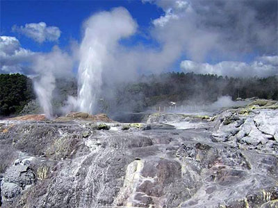
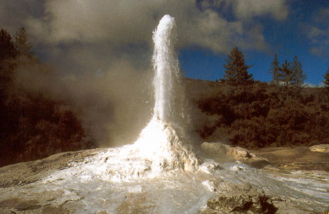
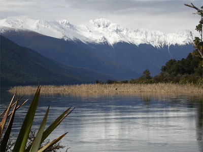

3. Бурлящая Роторуа, Северный остров, НЗ
Роторуа - знаменитый туристический центр Новой Зеландии, находящийся в 3 часах езды от Окленда. Небольшой город расположен в живописной долине на берегу озера Роторуа, в центре геотермально-активной зоны. Необычная природа здешних мест очаровывает своей первозданной красотой - поросшие девственными лесами холмы, реки и озера с хрустально чистой водой, курящиеся вулканы.
Популярность Роторуа не удивительна, т.к. город изначально и создавался именно как туристический центр Новой Зеландии. В Роторуа собраны в единый ансамбль история и повседневность Новой Зеландии, богатое историческое наследие маори и современная культура страны, дополняют же это уникальные природные гейзеры и живописнейшие озера. Если визит в Новую Зеландию ограничен во времени, посетив Роторуа турист почувствует, что он видел всю страну! Роторуа находится в одной из наиболее сейсмоактивных зон Новой Зеландии. Окрестности города богаты красотой природных ландшафтов. Поросшие девственными лесами холмы и горы, богатые рыбой реки и озера с хрустально чистой водой - все это делает эту местность привлекательной для любителей дикого туризма, охоты и рыбалки.
Термальные источники


